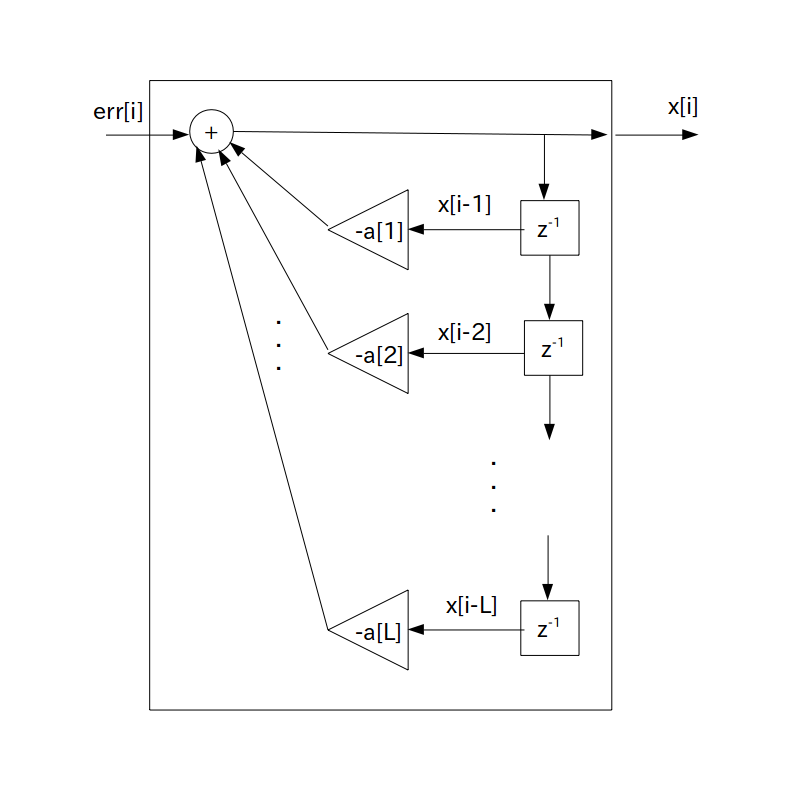

線形予測誤差の定義式を以下のように変形したとき、この式の事を「$\textrm{L}$ 次 AR モデル」( Auto-Regressive model : 自己回帰モデル)と呼び、記号では $AR(\textrm{L})$ で表します。
$\textrm{L}$ を正の整数とした時
\begin{align*} x[i] & = -\sum_{n=1}^{\textrm{L}} \{ a[n] \cdot x[i-n] \} \} + err[i] \\ & = -a[1] \cdot x[i-1] -a[2] \cdot x[i-2] - \cdots -a[\textrm{L}] \cdot x[i-\textrm{L}] + err[i] \\ \end{align*}$a[n]$ ・・・ LPC 係数(Linear Prediction Coefficient)、または線形予測係数
ただし線形予測誤差は $x[i]$ を入力した時の予測誤差 $err[i]$ を出力するFIR フィルタとみなしていましたが、 AR モデルでは
$err[i]$ を任意のホワイトノイズ入力、$x[i]$ を出力信号
とするIIR フィルタと考えます。
よって AR モデルは次のブロック図で表されます。
